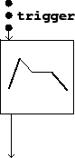
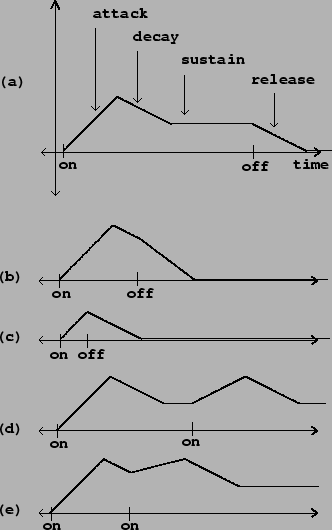

An envelope generator (sometimes, and more justly, called a transient generator) makes an audio signal that smoothly rises and falls as if to control the loudness of a musical note. Envelope generators were touched on earlier in Section 1.5. Amplitude control by multiplication (Figure 1.4) is the most direct, ordinary way to use one, but there are many other possible uses.
Envelope generators have come in many forms over the years, but the simplest and the perennial favorite is the ADSR envelope generator. ``ADSR" is an acronym for ``Attack, Decay, Sustain, Release", the four segments of the ADSR generator's output. The ADSR generator is turned on and off by a control stream called a ``trigger". Triggering the ADSR generator ``on" sets off its attack, decay, and sustain segments. Triggering it ``off" starts the release segment. Figure 4.1 shows the block diagram representation of an ADSR envelope generator.
|  |
There are five parameters controlling the ADSR generator. First, a level parameter sets the output value at the end of the attack segment (normally the highest value output by the ADSR generator). Second and third, the attack and decay parameters give the time duration of the attack and decay segments. Fourth, a sustain parameter gives the level of the sustain segment, as a fraction of the level parameter. Finally, the release parameter gives the duration of the release segment. These five values, together with the timing of the ``on" and ``off" triggers, fully determines the output of the ADSR generator. For example, the duration of the sustain portion is equal to the time between ``on" and ``off" triggers, minus the durations of the attack and decay segments.
|  |
Figure 4.2 graphs some possible outputs of an ADSR envelope generator. In part (a) we assume that the ``on" and ``off" triggers are widely enough separated that the sustain segment is reached before the ``off" trigger is received. Parts (b) and (c) of Figure 4.2 show the result of following an ``on" trigger quickly by an ``off" one: (b) during the decay segment, and (c) even earlier, during the attack. The ADSR generator reacts to these situations by canceling whatever remains of the attack and decay segments and continuing straight to the release segment. Also, an ADSR generator may be retriggered ``on" before the release segment is finished or even during the attack, decay, or sustain segments. Part (d) of the figure shows a reattack during the sustain segment, and part (e), during the decay segment.
The classic application of an ADSR envelope is using a voltage-control keyboard or sequencer to make musical notes on a synthesizer. Depressing and releasing a key (for example) would generate ``on" and ``off" triggers. The ADSR generator could then control the amplitude of synthesis so that ``notes" would start and stop with the keys. In addition to amplitude, the ADSR generator can (and often is) used to control timbre, which can then be made to evolve naturally over the course of each note.